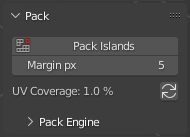
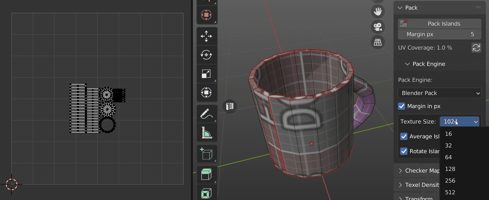
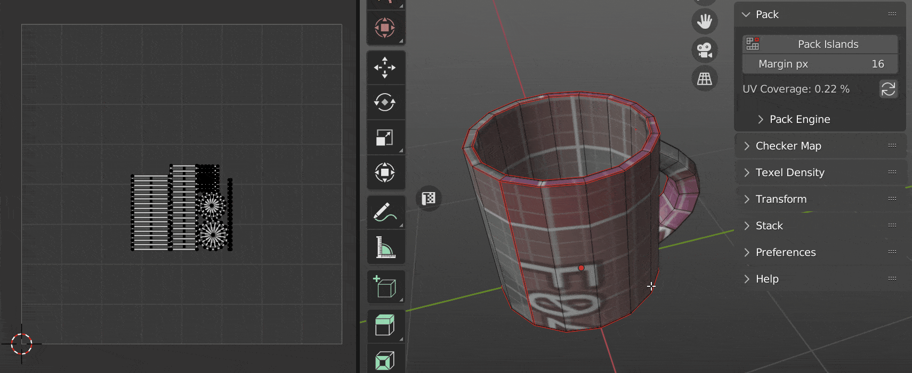
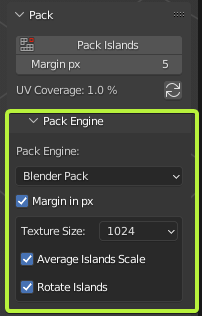
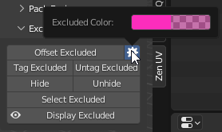

Pack
Info
We would like to inform you that the documentation available on this web page pertains exclusively to Zen UV 3. However, we would like to emphasize that Zen UV 4 is now available and offers a significantly improved user experience.
We also remind that Zen UV 3 users can Upgrade Zen UV 3 to Zen UV 4 with a discount!
Panel

Pack Islands
Pack all Islands using selected Pack Engine.
Margin
Set space between Islands for Pack Islands operation.

Tip
It’s important to have enough space (Margin) between UV Islands to avoid visual artefacts connected with texture filtering in game engine renders.
Here are suggested Margin values to use for different size textures:
- 256 - 2px
- 512 - 4px
- 1024 - 8px
- 2048 - 16px
- 4096 - 32px
- 8192 - 64px
UV Coverage
Calculate Islands UV Coverage for active UV map. Increasing UV Coverage value leads to the increasing Texel Density value, this in turn leads to the more efficient UV space usage and you can see more pixels on your model using the same texture.
The algotythm calculates total UV Islands area and shows the percentage in relation to the UV space. It can lead to the values more than 100% if you have Stacked Islands.

Tip
To increase UV Coverage value and achieve efficient UV space usage (80-90% of UV Coverage):
- Cut big Islands into smaller pieces if you have too much empty space.
- Upscale small objects on UV map to fill empty space.
- Downscale UV Islands that are barely visible on the model (e.g. bottom, back parts, etc.).
- Use UVPackmaster Pack Engine with enabled Heuristic option.
Pack Engine
Panel

Supported Pack Engines
Zen UV supports three Pack engines:
- Blender Pack
- UV Packmaster 2, 3
- UV Packer
Pack Engine Preferences
The main preferences of each Pack Engine are placed in Zen UV interface. To use all the preferences please go to the main interface of the engine (UV Packer, UV Packmaster).
Below we described General preferences for all Pack Engines. If you want to obtain information about Specific preferences for some engine, please refer to the documentation of the corresponding engine.
Texture Size
Texture Size preset, works in pair with Margin.
Average Islands Scale
Average Islands Scale before Pack Islands operation.

Rotate Islands
Allow Pack Engine rotate Islands.

Tip
UV Packmaster Pack Engine has super useful option Lock Overlapping. It’s recommended to be used to Pack Stacked and Overlapping Islands. If you don’t have UV Packmaster installed, but still want to Pack Stacked and Overlapping Islands watch this video.
Tip
If you want to use specific UV Packmaster Pack Engine features that are not present in Zen UV interface do not forget to transfer existing settings using this Transfer settings button.

Then you can open UV Packmaster interface and complete the setup.
Excluded System
- Excluded system for the Pack operator. Mark Islands to exclude them from packing. This works for Blender Pack and UV Packmater Engine.
Panel

Offset Excluded
- Move Islands tagged as Excluded from Packing out of UV Area.
Preferences

- Excluded Color - Excluded Islands viewport display color.
Tag Excluded
- Tag Islands as Excluded from Packing.
Untag Excluded
- Untag Islands tagged as Excluded from Packing.
Hide
- Hide Islands tagged as Excluded from Packing.
Unhide
- Unhide Islands tagged as Excluded from Packing.
Select Excluded
- Select Islands tagged as Excluded from Packing.
Display Excluded
- Display Islands tagged as Excluded from Packing.